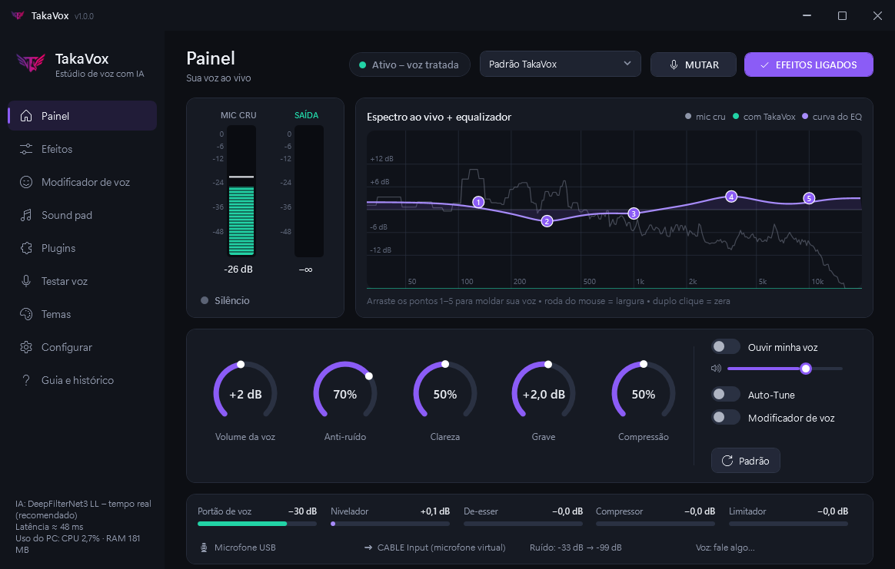
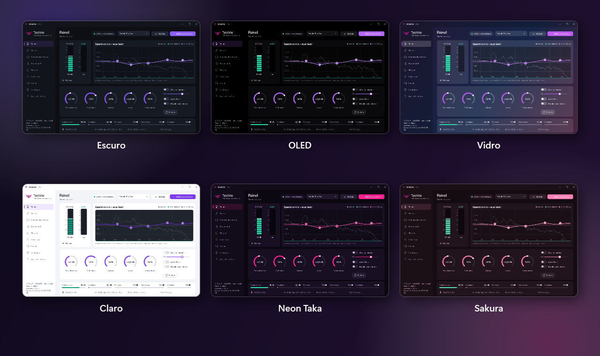

Voz limpa com IA
A IA DeepFilterNet3 tira teclado mecânico, cliques de mouse, ventoinha, rua e chiado sem deixar a voz robótica.
Grátis e de código aberto · Windows 10 e 11
O TakaVox tira o barulho do teclado e da ventoinha com IA, muda a sua voz (até com IA), toca sons com teclas de atalho e roda plugins VST — sem tirar FPS do jogo.
Instala só para o seu usuário, sem pedir administrador.

Medido num Ryzen 5 5500.
Recursos
Sem DAW e sem configuração complicada: a calibração automática acerta tudo para o seu microfone em 10 segundos.
A IA DeepFilterNet3 tira teclado mecânico, cliques de mouse, ventoinha, rua e chiado sem deixar a voz robótica.
Portão de voz guiado pela IA, nivelador, equalizador de 5 faixas, de-esser, compressor e limitador: a voz nunca estoura.
22 vozes prontas e vozes com IA realistas, que soam como outra pessoa falando.
Memes, vinhetas e músicas com tecla de atalho que funciona até dentro do jogo, todos no mesmo volume.
Os mesmos do FL Studio, Ableton e Reaper, direto na voz. Já vem com ~20 efeitos grátis.
Em tempo real, do efeito robô no estilo T-Pain até uma correção natural.
Escuro, OLED, Vidro (com o desfoque do Windows 11), Claro, Neon, Grafite, Oceano e Sakura.
Economia automática, 0% de CPU na bandeja e áudio no núcleo que os jogos menos usam.
Telas
Clique numa tela para ver em tamanho real.
Memes, vinhetas e músicas misturados com a sua voz.
O editor mostra a forma de onda e acerta tudo sem programa de áudio.
De garota de anime a demônio, ao vivo.
Cada etapa do som profissional, já ajustada para você.
Os mesmos do FL Studio, Ableton e Reaper, direto na voz.
Tudo acertado em 10 segundos, antes de entrar na call.
Escuro, OLED, Vidro (com o desfoque do Windows 11), Claro, Neon, Grafite, Oceano e Sakura.

Desempenho
Leve quando ninguém está te ouvindo, firme quando todo mundo está.
Quando nenhum app (Discord, jogo, OBS) está usando o microfone virtual, a IA para e o TakaVox usa 0,4% de um núcleo. Assim que um app abre o microfone, ele volta antes da primeira palavra.
A interface fica parada (0% de CPU) e a memória da tela volta para o Windows: de ~230 MB para ~60 MB em uso. Nada é desenhado com um jogo em tela cheia na frente.
As threads de áudio preferem o núcleo que os jogos menos usam. A voz com IA roda numa thread própria, com folga, e se falhar a sua voz normal volta sozinha: o microfone nunca fica mudo.
Funciona com Valorant e outros jogos com anti-cheat: o TakaVox é um app de áudio comum e não injeta nada no jogo.
Instalar
Se aparecer "O Windows protegeu o computador", clique em Mais informações › Executar assim mesmo. O app ainda não tem certificado pago.
Instale o microfone virtual com 1 clique (o app baixa o VB-CABLE oficial e confere a assinatura) e calibre em 10 s.
Em Voz e vídeo: entrada Padrão, Supressão de ruído: Nenhuma e controle automático de ganho desligado.
Nos jogos, deixe o microfone no padrão do Windows. No OBS, adicione o CABLE Output como microfone.
As vozes com IA usam o Beatrice 2, um conversor de voz gratuito. Os termos dele não permitem redistribuir, então você baixa no site oficial e o TakaVox importa os arquivos em Modificador de voz › Vozes com IA.
Requisitos: Windows 10 ou 11, 64 bits.
Atalhos
| Atalho | O que faz |
|---|---|
| Ctrl + Alt + M | Mudo |
| Ctrl + Alt + V | Liga e desliga o modificador de voz |
| Ctrl + Alt + T | Liga e desliga o Auto-Tune |
| Ctrl + Alt + B | Liga e desliga todos os efeitos (antes × depois) |
| Ctrl + Alt + P | Para todos os sons do sound pad |
| A sua escolha | Cada som do sound pad. Teclas automáticas coloca Num 1…Num 0 de uma vez. |
Dúvidas
Na prática, não. Sem ninguém te ouvindo, ele descansa. Em call, usa ~2% do processador, longe dos núcleos que o jogo mais usa.
Sim. O TakaVox é um app de áudio comum: não injeta nada no jogo e usa os atalhos normais do Windows.
Sim, e o código é aberto, com licença MIT. O microfone virtual (VB-CABLE) é donationware: se puder, apoie o autor.
Desligue a Supressão de ruído (Krisp) do Discord. Ela trata música e efeitos como ruído, e o TakaVox já limpa a sua voz.
Em Configurar › Restaurar tudo como era antes (microfone padrão, volume do mic e inicialização). Para desinstalar, use "Aplicativos instalados" do Windows.
Em %APPDATA%\TakaVox: ajustes, vozes salvas, sound pad, presets de plugins e a voz com IA.
Grátis, de código aberto e sem pedir administrador.
Baixar para WindowsInstalador · 64 bits